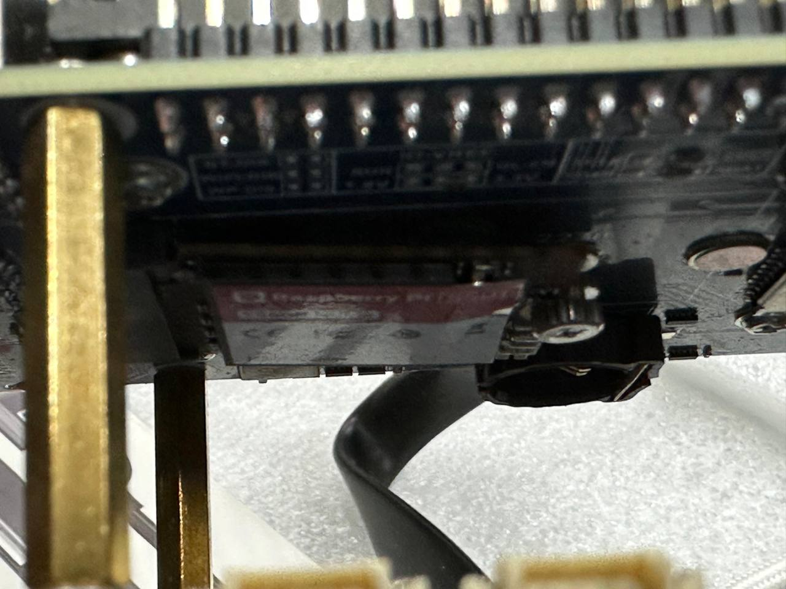
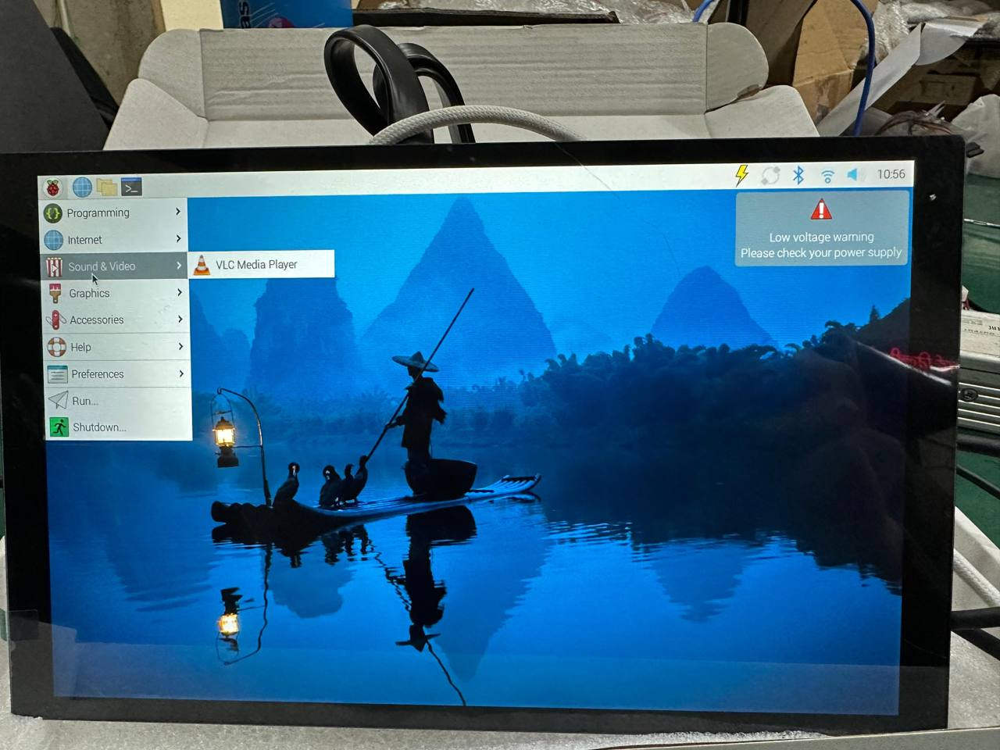

A collection of media and notes from my time interning at RT Vision Technologies Pvt. Ltd.

At RTV, I created a simple user interface to simulate various data packets being sent from components present in a train, such as cameras, display units, and controllers of various sorts.
This was part of a larger system-testing effort which included multiple other systems of the company being examined simultaneously. The interface allowed us to mock real-world scenarios and verify system integrity.

Parallel to my main tasks, I explored crafting a facial attendance system using a spare Raspberry Pi Compute Module that was collecting some dust.
This independent project allowed me to dive into hardware-software integration, exploring how lightweight compute modules can handle real-time image processing tasks in constrained environments. The setup shown here displays the system interface running on the Pi.